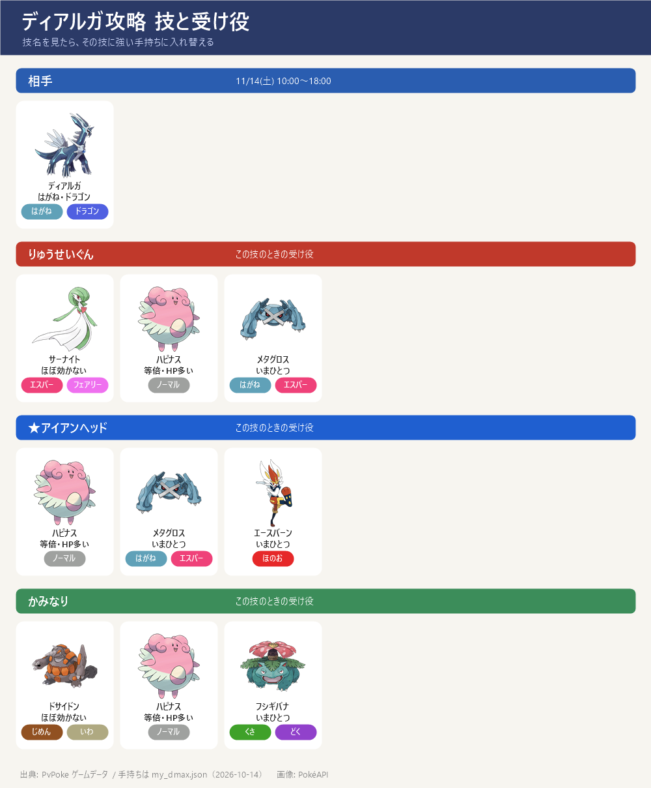

- GOワイルドエリア：グローバル 11/14(土) 10:00～18:00。ダイマックス ディアルガ（はがね・ドラゴン）
- 弱点：じめん・かくとう（2倍）。攻撃役はカイリキー・ドサイドン（どろかけ）・ドリュウズ（入手できたら）
- ねらい目の技：アイアンヘッド（威力72）。いちばん危ないのは りゅうせいぐん（180）
スペシャルアタック候補とねらい目

- りゅうせいぐん（ドラゴン）威力 180 ← いちばん危ない
- ★ アイアンヘッド（はがね）威力 72 ← ねらい目（いちばん弱い）
- かみなり（でんき）威力 100
- 「ときのほうこう」はオリジンフォルムだけの技なので、ダイマックス版は使わない見込み。通常技はドラゴンブレス／メタルクロー
- 技は選べない。最初の大技の名前を見て、受け役を合わせる
手持ちが受けるダメージ
- ハピナス：りゅうせいぐん 180 ／ アイアンヘッド 72 ／ かみなり 100
- メタグロス：りゅうせいぐん 112（いまひとつ） ／ アイアンヘッド 45（いまひとつ） ／ かみなり 100
- ドサイドン：りゅうせいぐん 180 ／ アイアンヘッド 115（弱点） ／ かみなり 39（ほぼ効かない）
- サーナイト：りゅうせいぐん 70（ほぼ効かない） ／ アイアンヘッド 115（弱点） ／ かみなり 100
- シャワーズ（預け中・CP未確認）：りゅうせいぐん 180 ／ アイアンヘッド 45（いまひとつ） ／ かみなり 160（弱点）
- フシギバナ：りゅうせいぐん 180 ／ アイアンヘッド 72 ／ かみなり 62（いまひとつ）
- エースバーン：りゅうせいぐん 180 ／ アイアンヘッド 45（いまひとつ） ／ かみなり 100
- カイリキー：りゅうせいぐん 180 ／ アイアンヘッド 72 ／ かみなり 100
- ジジーロン（通常技未確認）：りゅうせいぐん 288（弱点） ／ アイアンヘッド 72 ／ かみなり 62（いまひとつ）
- ゲンガー：りゅうせいぐん 180 ／ アイアンヘッド 72 ／ かみなり 100
- インテレオン：りゅうせいぐん 180 ／ アイアンヘッド 45（いまひとつ） ／ かみなり 160（弱点）
- 数字＝技の威力 × 相性（ボスと同じタイプの技は1.2倍）。並びは受けやすい順（防御とHPも計算に入れた）。ハピナスは相性が等倍でもHPがとても多いので上に来る
何回で倒せる？（ダイマックス技の回数を逆算）
- 前提：相手のHP 約75,000（Dittobase の推定値。公式の数字は未発表）、相手の防御の補正 0.85（Pokebase の初期値）。この計算で Lv40・100%のカイリキーが1発345になり、Dittobase の数字と一致。個体値は15/15/15として、CPからレベルを逆算。キノコ（2倍）・応援・相手の強化は入れていない
- 1発のダメージと、ひとりで倒すのに要る回数（Lv1 → Lv3 にしたとき）
- ドサイドン（どろかけ → ダイアース）：1発 227 → 331発 ／ Lv3：318 → 236発
- エースバーン（キョダイ・Lv2）：1発 231 → 325発 ／ Lv3：260 → 289発（相性は等倍だが、キョダイ技は元の威力が高い）
- カイリキー（CP1698）：1発 184 → 408発 ／ Lv3：257 → 292発
- ドサイドン（今のうちおとす → ダイロック）：1発 89 → 843発 → 必ずどろかけに替える
- メタグロス（れんぞくぎり）：1発 83 → 攻撃には使わない。参考：ドリュウズ Lv40・100% は 267（Lv3：374）、カイリキー Lv40・100% は 246（Lv3：345）
- ダイマックス1回 ＝ 1人3発。4人なら1回で12発
- 4人全員がドサイドン並み（約230）なら：1回で約2,750 → ダイマックス約28回。全員 Lv3（約320）なら約3,800 → 約20回
- 近道：①ドサイドンをどろかけに ②ダイアースを Lv2～3 に（1発が約1.3～1.4倍）③カイリキーを強化（CP1698 → 2500前後で1発 約220）④マックスキノコ（2倍）
- 一度に何人で戦えるかで回数が大きく変わる → 当日にゲーム内で確認
並びと動き方
- 並び（ドリュウズなし）：ドサイドン（攻撃）／カイリキー（攻撃）／メタグロス（ダイウォール）／ハピナス（回復）
- メタグロス：りゅうせいぐん・アイアンヘッドをどちらもいまひとつで受けられて、弱点の技がない → ダイウォール役にいちばん向く
- ハピナス：相性は等倍でもHPが多く、どの技でも受けられる → ダイリカバリーで回復しながら受ける
- ドサイドン：かみなりはほぼ効かないが、アイアンヘッドは弱点 → かみなりのときだけ前に。それ以外は攻撃に専念
- サーナイト：りゅうせいぐんはほぼ効かない（フェアリー）が、アイアンヘッドが弱点 → 技名がりゅうせいぐんと分かってから出す
- 出さない：インテレオン・シャワーズ（かみなりが弱点）、ジジーロン（りゅうせいぐんが弱点）
出典: タイプ・技・威力: PvPoke ゲームデータ・PokéAPI(pogoapi) ／ 手持ち: my_dmax.json ／ 全体の作戦: 「ワイルドエリア2026 ダイマックス攻略」ページ
画像: PokéAPI ／ 更新 2026-10-14